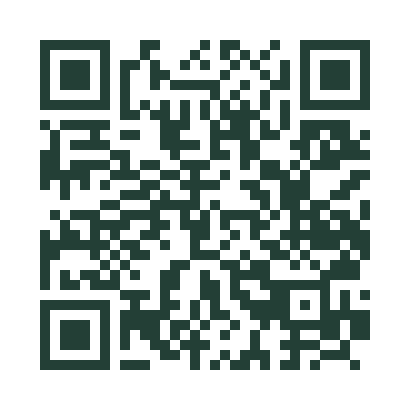

Challenge 01

These four marks are your starting point.

Paper meets possibilities.
Scan to return to this challenge.
Download QR code ↓
Paper or digital · No account neededA few marks,
A few marks,
many possibilities.
Turn these marks into an unexpected scene, object or idea.
- Keep every original mark visible, in its original position and orientation.
- Add freely: lines, shapes, words or colour.
- Give it a title. Add a sentence about your thinking if you like.
You may scale the whole starter uniformly. Don't move, erase or rotate individual marks. Rough sketches are welcome; there's no single correct answer.

Print the PDF at actual size or fit to page. Or open the PNG/SVG in a drawing tool you already use. The activity works offline.
Optional: explore the Turtle source
These placements are fixed, not random. Programming isn't needed to participate. Changing the original marks is a separate experiment, outside this challenge's constraints.
Download Python source ↓The source lists its optional dependencies. Review downloaded code before running it.